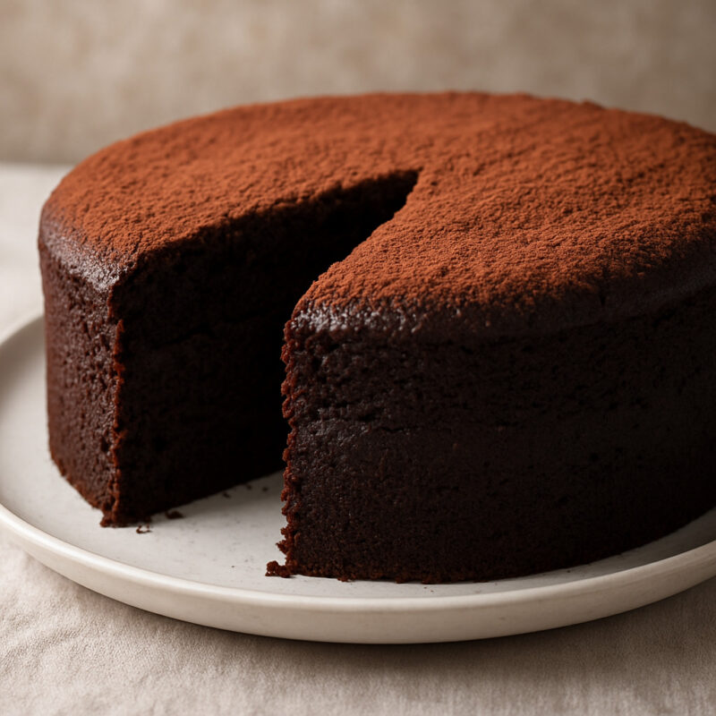

Recetapp
Inicio
Favoritos
Publicar
Perfil
Mis recetas favoritas
Pasta con salsa
Tiempo: 30 minutos
Ver receta
Quitar de favoritos

Torta de chocolate
Tiempo: 50 minutos
Ver receta
Quitar de favoritos
Todavía no tenés recetas favoritas.